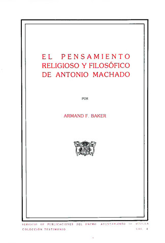

The Religious and Philosophical Thought of Antonio Machado
This is a translation of the book which I published several years ago in Spanish: El pensamiento religioso y filosófico de Antonio Machado. As I have explained in the "Introduction," the purpose of this book is to study the work of Antonio Machado from the point of view of the "new consciousness," giving special attention to certain religious and philosophical themes. When I wrote this book, I was guided by an interest which was both intellectual and religious. It was my hope to write an optimistic book which gives hope to those who believe, like Machado, in the future of humanity. In this way I pay my debt--"you are indebted to me for what I have written," Machado has written--to one of the most important writers of the Twentieth Century.
|  | Table of ContentsIntroduction Chapter I Chapter II Chapter III Chapter IV Chapter V Chapter VI Chapter VII |